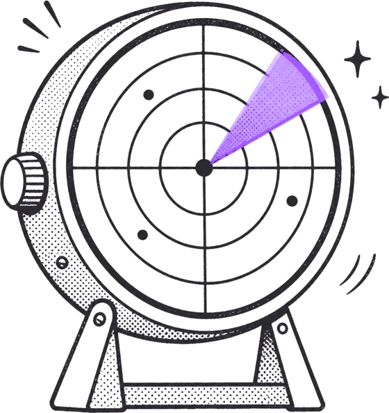
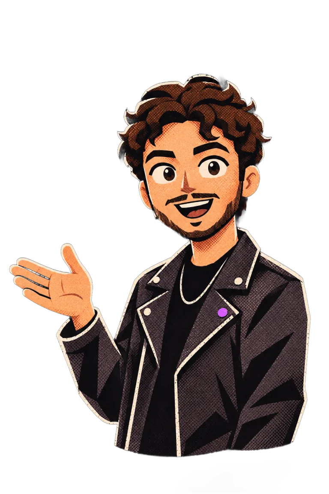
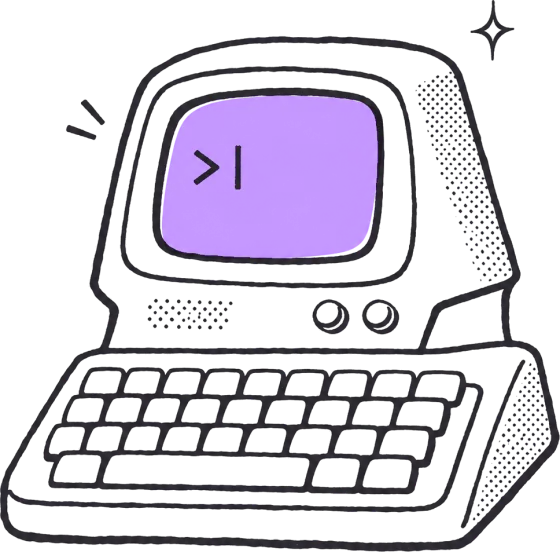

İÇERİK SERİSİ · KARİYER
Fırsat Radarı
Öğrenciler ve yeni mezunlar için staj, eğitim ve etkinlik fırsatlarını bir araya getirdiğim seri.
Fırsat listesine git ↗Ben Anıl. Yazılım ve yapay zekâ üzerine içerikler hazırlıyorum. Tasarımlarımı ve çalışmalarımı burada paylaşıyorum.

Keşfettiğim araçlar, çizerek anlattığım fikirler ve paylaşmaya değer bulduklarım.


Öğrenciler ve yeni mezunlar için staj, eğitim ve etkinlik fırsatlarını bir araya getirdiğim seri.
Fırsat listesine git ↗

Karmaşık konuları sadeleştiren kısa içerikler. Biraz kod, biraz çizim, bolca keşif.
İçeriklere göz at ↗Ben Anıl. Yazılım, yapay zekâ ve görsel anlatım arasında dolaşıyorum. Bir aracın nasıl çalıştığını anlamak kadar, onu herkesin anlayabileceği bir hikâyeye dönüştürmek de hoşuma gidiyor. Burada denemelerimi, tasarımlarımı ve yol boyunca öğrendiklerimi bulacaksın.
Tasarım, teknoloji ya da sadece bir merhaba.